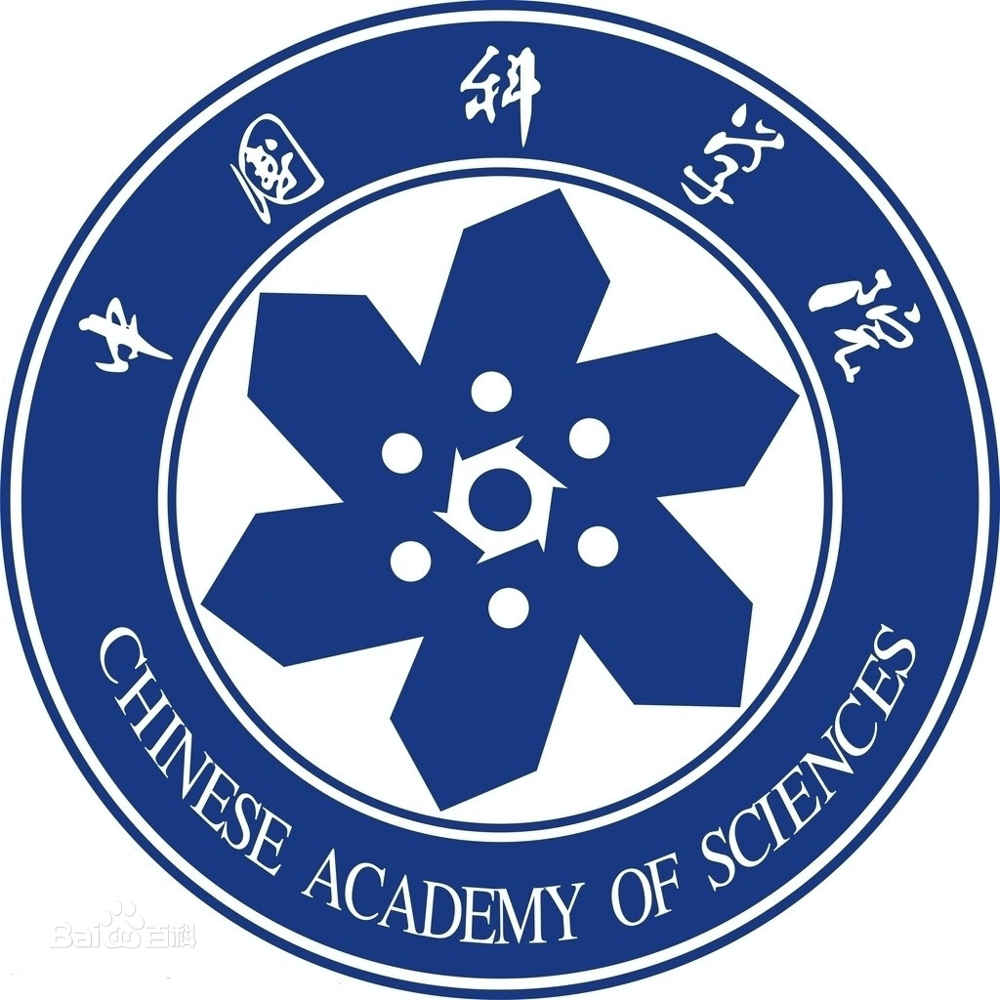
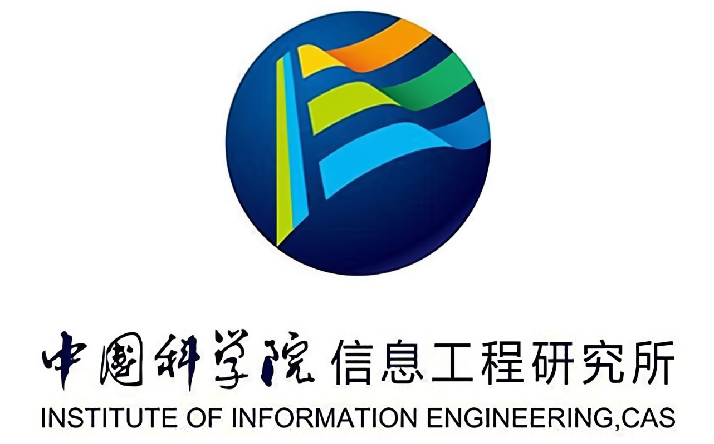

I obtained my Ph.D degree from University of Chinese Academy of Sciences in June, 2019. Now my work and interests mainly focus on mobile networks, edge computing, blockchain and machine learning

University of Chinese Academy of Sciences, Beijing, China
September 2015 - July 2019
Ph.D. in Computer Sciences

Institute of Information Engineering，Chinese Academy of Sciences, Beijing, China
December 2021 -
Engineer and Researcher
Huawei Technologies Co., Ltd., Beijing, China
June 2019 - December 2021
R&D Engineer
Zhongjiang Yao, Jingguo Ge, Yulei Wu, Xiaosheng Lin, Runkang He, Yuxiang Ma:
Encrypted traffic classification based on Gaussian mixture models and Hidden Markov Models. J. Netw. Comput. Appl. 166: 102711 (2020)
Zhongjiang Yao, Lei Zhang, Jingguo Ge, Yulei Wu, Xiaodan Zhang "An Invisible Flow Watermarking Technology: A Hidden Markov Model Method," IEEE International Conference on Communications (ICC-2019), EI.
Programming Languages and Tools: Python, C++, Java, Git, Xmind, LATEX, MarkDown.
Network Skills: SDN/NFV and network protocol stack, especially TCP/IP protocol.
Linux & Unix: common commands (i.e., awk) and tools (i.e., vim) on Ubuntu & CentOS.
Quantitative Research: encrypted traffic classification, especially obfuscated traffic, (i.e., meek, fte,
obfs).
Machine Learning: machine learning algorithms (i.e., HMM, SVM) and deep learning algorithms (i.e.,
CNN, RNN and transformer).
Blockchain: smart contact and consensus algorithms development on Fabric.
Languages and Communication English(listening, reading and writing), Chinese (mother tongue).
Waiting for updated.